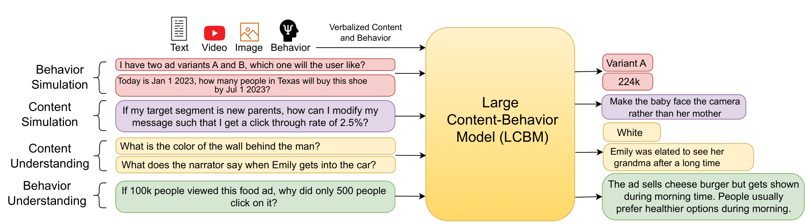

Large Content and Behavior Models to Understand, Simulate, and Optimize Content and Behavior
Get in touch with us at behavior-in-the-wild@googlegroups.com

Abstract
Shannon and Weaver's seminal information theory divides communication into three levels: technical, semantic, and effectiveness. While the technical level deals with the accurate reconstruction of transmitted symbols, the semantic and effectiveness levels deal with the inferred meaning and its effect on the receiver. Large Language Models (LLMs), with their wide generalisability, make some progress towards the second level. However, LLMs and other communication models are not conventionally designed for predicting and optimising communication for desired receiver behaviours and intents. As a result, the effectiveness level remains largely untouched by modern communication systems. In this paper, we introduce the receivers' "behavior tokens", such as shares, likes, clicks, purchases, and retweets, in the LLM's training corpora to optimize content for the receivers and predict their behaviors. Our trained models, other than showing similar performance to LLMs on content understanding tasks, show generalization capabilities on the behavior dimension for behavior simulation, content simulation, behavior understanding, and behavior domain adaptation. Using a wide range of tasks on three corpora, we show results on all these capabilities. We call these models Large Content and Behavior Models (LCBMs). Further, to spur more research on LCBMs, we release our new Content Behavior Corpus (CBC), a repository containing communicator, message, and corresponding receiver behavior.
BibTeX
@inproceedings{
khandelwal2024large,
title={Large Content And Behavior Models To Understand, Simulate, And Optimize Content And Behavior},
author={Ashmit Khandelwal and Aditya Agrawal and Aanisha Bhattacharyya and Yaman Kumar Singla and Somesh Singh and Uttaran Bhattacharya and Ishita Dasgupta and Stefano Petrangeli and Rajiv Ratn Shah and Changyou Chen and Balaji Krishnamurthy},
booktitle={The Twelfth International Conference on Learning Representations},
year={2024},
url={https://openreview.net/forum?id=TrKq4Wlwcz}
}
Terms Of Service
Content Behavior Corpus (CBC) is sourced from brand videos available on YouTube, Facebook Ads, and CommonCrawl. The dataset annotations and video links for CBC will be released under the MIT License. The videos themselves are subject to the original creators' licenses. This dataset do not reveal any identities of the annotators or specific individuals. While the videos originate from brands, some brand content may be perceived as offensive by certain individuals.
Acknowledgement
We thank Adobe for their generous sponsorship.
We thank the LLaMA team for giving us access to their models, and open-source projects, including Vicuna.
This website is adapted from Nerfies, licensed under a Creative Commons Attribution-ShareAlike 4.0 International License.